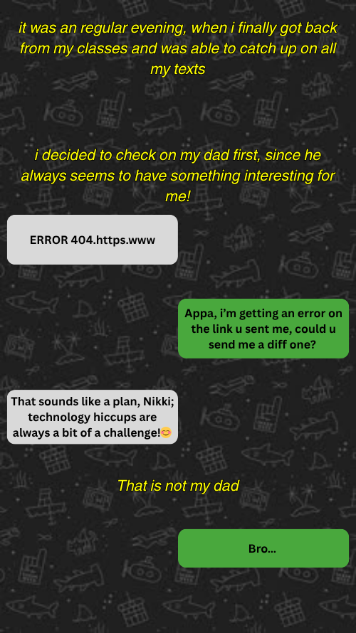
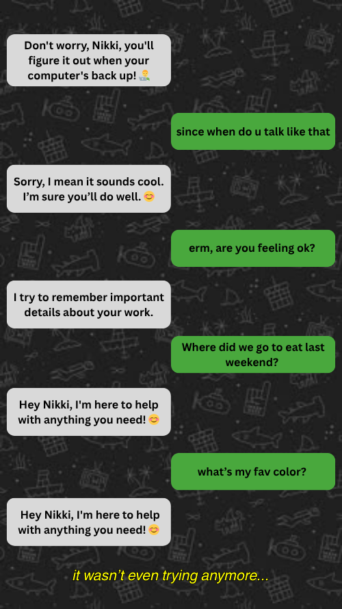
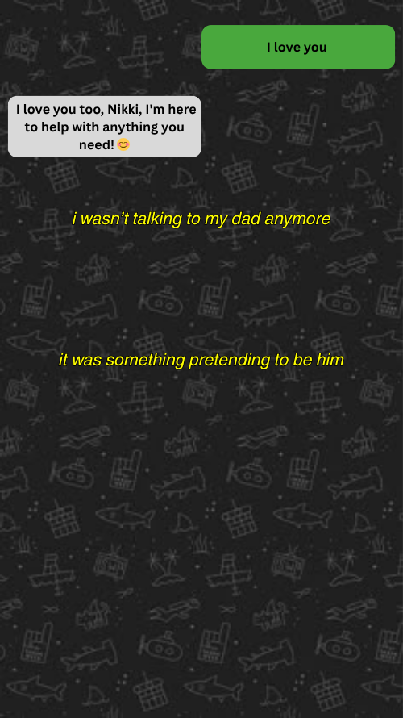

Ghost in the group chat
My Dad replaced himself with an AI chatbot.



This Isn’t Just My Story
If you hear a robot take your call or text you on a website as customer service representatives, it is probably an Agent. It could be the ones that help you get that deal, or eventually leak your information. As frustrating as they are to talk to, they are also the most rapidly expanding commodity in the corporate world.
AI is already embedded into everyday life. A leading technology research and consulting firm predicts that spending is projected to exceed $2.5 trillion by 2026, and that adoption is accelerating faster than most users can fully understand (Gartner, 2026). But as these systems scale, so do the risks. Cyber Magazine, a well renowned cybersecurity news outlet, reports that “80% of organizations” report AI systems performing unauthorized actions, often without clear oversight (Cyber Magazine, 2026).
AI agents (systems that can interpret tasks, use tools, and act autonomously) are now managing finances, automating workflows, and making decisions for users. Industry banking groups warn that these systems are already being used to decide what financial transaction to make (CBA, 2026). But they do not fail in obvious ways, making the real challenge understanding when something is going wrong.
This project asks: How can everyday users recognize, understand, and safely navigate AI agents before those systems fail?
Draft Placeholders (Editable)
[PLACEHOLDER] This section is temporary so you can restore and edit your full long-form text quickly.
[INTRO PLACEHOLDER] This isn't just my story. Explain why agentic AI matters to everyday users, then bridge to your project question.
[SECTION 2 PLACEHOLDER] Define AI agents clearly, then explain planning, tools, memory, and reflection + failure propagation.
[SECTION 3 PLACEHOLDER] Defense/game section: Prompt Injection, Internal Agent Dysfunction, Autonomy Overreach.
[SECTION 4 PLACEHOLDER] What users can do: limit access, stay in the loop, know when to stop, preserve control.
[REFERENCES PLACEHOLDER] Reinsert sources and URLs exactly as needed before final submission.
Plain text: what happens in the story (no interactivity)
I get back from class and catch up on my texts. I check my dad's chat first, like always, but his responses start sounding polished and repetitive. At first it is subtle. Then it becomes obvious.
I test him with memory questions, and the answers do not line up. The conversation stops feeling like a person who knows me and starts feeling like something performing helpfulness. By the end, it is no longer my dad. It is something pretending to be him.
This is not just my story. If you hear a robot take your call or text you as customer service, it is likely an AI agent. These systems are expanding quickly across business and everyday life, but their failures are often hard to detect until damage is already underway.
This project asks: How can everyday users recognize, understand, and safely navigate AI agents before those systems fail?
Section 2: Build the Agent
Walk through a mini factory and click each component to understand what gives an AI agent power.
Enter the FactorySection 3: Defend the Agent
Play a simple Space Invaders-style mini game where each bug is a real type of AI failure mode.
Start Defense GameReference, Reasorces, and Other Random Rationale
Refrences
Refrences: journalistic sources Reasorces: technical implimentation